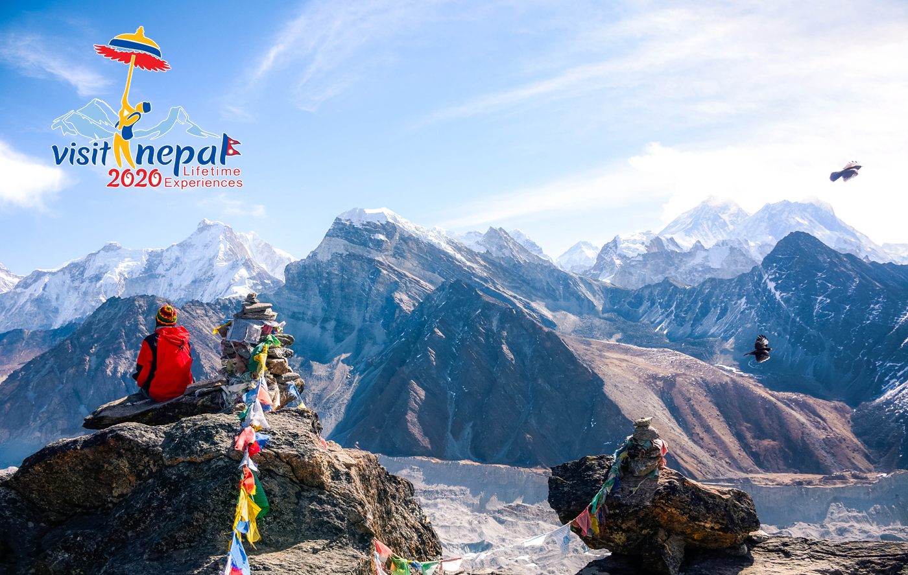

Map of Nepal

Nepal is a landlocked country in South Asia and is bordered by China and India. It is located in the Himalayas and contains eight of the world's ten highest peaks. The government system is a federal parliamentary republic; the chief of state is the president, and the head of government is the prime minister.
Mt.Everest

Mount Everest is a peak in the Himalaya mountain range. It is located between Nepal and Tibet, an autonomous region of China. At 8,849 meters (29,032 feet), it is considered the tallest point on Earth.
Mountains
Nepal contains most of the Himalayas, the highest mountain range in the world. Eight of the fourteen eight-thousanders are located in the country, either in whole or shared across a border with China or India. Nepal has the highest mountain in the world, Mount Everest as well as 1,310 peaks over 6,000 m height.
Dhararahara

Dharahara in Kathmandu was the tallest building in Nepal and the second such tower built by Bhimsen Thapa. The first tower was built eight years earlier in 1824 (1881 BS) at his residence, Janarala Bagh, situated at south-east of Sundhara, near Bhotebahal of Kathmandu.